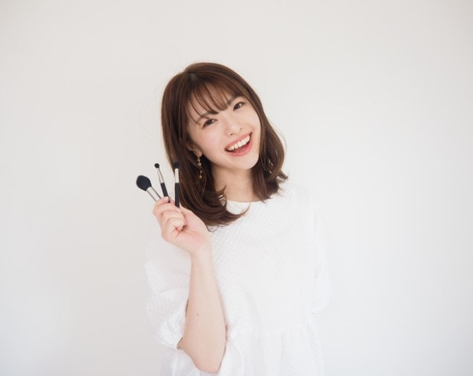

Message

TOMOKO
イメージコンサルタント/more up 代表
”垢抜けてキレイになりたい”
そんな思いでサロンに来ていただく女性をたくさん見てきました。そんな私も、数年前は同じ思いでイメージコンサルを受けた一人でした。
「あなたのパーソナルカラーはスプリングです」「骨格ウェーブなのでハイウエストが似合います」自分を輝かせるファッションのアドバイスは一生物の知識となりました。
じゃあ、みんながその通りに服を着てメイクしてキレイになれるのか?私はそうは思いません。確かに、第一印象がアップすることは間違いないでしょう。しかし、本当にあなたの人生を輝かせるファッションは「診断結果」の中には存在しないと思っています。
キレイで垢抜けた女性は「内側から魅力があふれる女性」だと考えます。そんな女性になるために必要なのは、「あなたの魅力を最大限に引き出すファッションをすること」そして、「あなたがなりたい自分になること」です。心から外見に自信を持ち、着たい服を着て、したいメイクをする、それがあなたの人生を輝かせます。
当サロンに来ていただいたことがきっかけで人生が動き出した女性がたくさんいます。
「彼氏ができた!」
「大好きな彼にプロポーズされた!」
「きれいになったと褒められた!」
次はあなたの番。
外見を磨けば人生が変わります。
一緒に人生を変えましょう!
そんな思いでサロンに来ていただく女性をたくさん見てきました。そんな私も、数年前は同じ思いでイメージコンサルを受けた一人でした。
「あなたのパーソナルカラーはスプリングです」「骨格ウェーブなのでハイウエストが似合います」自分を輝かせるファッションのアドバイスは一生物の知識となりました。
じゃあ、みんながその通りに服を着てメイクしてキレイになれるのか?私はそうは思いません。確かに、第一印象がアップすることは間違いないでしょう。しかし、本当にあなたの人生を輝かせるファッションは「診断結果」の中には存在しないと思っています。
キレイで垢抜けた女性は「内側から魅力があふれる女性」だと考えます。そんな女性になるために必要なのは、「あなたの魅力を最大限に引き出すファッションをすること」そして、「あなたがなりたい自分になること」です。心から外見に自信を持ち、着たい服を着て、したいメイクをする、それがあなたの人生を輝かせます。
当サロンに来ていただいたことがきっかけで人生が動き出した女性がたくさんいます。
「彼氏ができた!」
「大好きな彼にプロポーズされた!」
「きれいになったと褒められた!」
次はあなたの番。
外見を磨けば人生が変わります。
一緒に人生を変えましょう!
<保有資格>
‧サイアートパーソナルカラーアナリスト(12タイプ)
‧骨格診断アドバイザー
‧顔タイプアドバイザー
‧顔タイプウェディングアドバイザー
‧サイアートパーソナルカラーアナリスト(12タイプ)
‧骨格診断アドバイザー
‧顔タイプアドバイザー
‧顔タイプウェディングアドバイザー